Paketlagerdispo — wie alles funktioniert
Dieses Handbuch erklärt alle Funktionen für Teamleads und Mitarbeitende: welche Daten reinkommen, wie die Engine Belege priorisiert und fair verteilt, wie zusammengehörige Lieferscheine erkannt werden, wie die Mitarbeiter-App Schritt für Schritt funktioniert, und welche Wünsche aus dem Feedback umgesetzt sind. Am Ende: ehrliche Befunde zu Inkonsistenzen. Alle Diagramme sind aus dem echten Code abgeleitet (Mermaid).
1Überblick & Tagesablauf
Das System nimmt Wareneingangs-Belege entgegen, macht daraus faire, planbare Tagesbündel je Mitarbeiter und begleitet sie bis zum Tagesabschluss (ZST). Der Teamlead steuert, greift bei Bedarf ein und behält die Auslastung im Blick.

Rollen
- Mitarbeiter:in — bekommt ein Bündel, sammelt die Plätze ab, bearbeitet Belege, meldet Probleme.
- Teamlead — steuert den Pool (Priorisieren, Parken, Eingriffe), startet Simulation/Neuberechnung und den Tagesabschluss.
- Admin / IT — pflegt Regeln, Lagerplätze, Mitarbeitende und Integrationen.
Kurz-Glossar
| Begriff | Bedeutung |
|---|---|
| Beleg | Ein Wareneingang (WE-Beleg) mit Positionen und Größen/Mengen. |
| Bündel | Eine „Karre" Arbeit für eine Person (~55 Min, ≤ 6 Belege). |
| Pool | Alle Belege im Status ready, die verteilt werden können. |
| Eiserne Reserve | Puffer, der nicht verplant wird (für nächsten Morgen / Eilfälle). |
| ZST | Zeit-/Leistungs-Tagesabschluss; Export der erledigten Belege als CSV. |
2Welche Daten kommen rein
Jeder Beleg ist nach dem Industrie-Standard (ASN/DESADV) dreistufig aufgebaut: Beleg-Kopf → Positionen → SKU-Zeilen (EAN × Größe). Dazu kommen Arbeitsanweisungen auf Kopf- und Positionsebene.

| Ebene | Wichtige Felder | Wofür |
|---|---|---|
| Beleg-Kopf | WE-Beleg-Nr, Lieferschein-Nr, Filiale, Abschnitt (1–4,7,8), Warenart, Lagerplatz, Buchungs-/Verladetag, Prio-Kennzeichen | Identität, Priorität, Lagerort, Verladelogik |
| Position | Warengruppe (WGR), Lieferanten-Artikel-Nr, Farbe, Saison, NOS-Kennzeichen, Shop/Etage | Artikel-Identität, Handling |
| SKU-Zeile | EAN, Größe, Soll-Menge (Ist-Menge erst beim Bearbeiten) | Mengen-Prüfung |
source=prohandel_api + externalRef). Der eigentliche Delta-Pull ist Konzept-/v1-Stand: derzeit ein Lesezugriff ohne Rückschreiben. Bis position-genaue Aufwandsdaten geliefert werden, rechnet die Engine mit dem je Beleg vorab gespeicherten estimatedMinutes (siehe Abschnitt 4 & 9).3Lieferschein-Gruppierung
Damit zusammengehörige Belege einer Anlieferung nicht über das ganze Team zersplittern, erkennt die Engine Lieferungs-Gruppen und versucht, eine Gruppe möglichst bei einer Person zu halten (Teamlead-Anforderung Punkt 1).

Wie erkannt wird
- Gleiche Lieferschein-Nr → eine Gruppe, oder
- Fortlaufende WE-Beleg-Nummern (Lücke ≤
maxWeBelegGap, Standard 1) → eine Gruppe.
Technisch: detectDeliveryGroups() (Union-Find) im assignment-engine, konfiguriert über den Admin-Tab „Lieferungen" (enabled, maxWeBelegGap).
Wie zugeordnet wird
Die Verteilung wendet eine weiche Affinität an: Belege einer Gruppe landen bevorzugt beim selben Mitarbeiter — aber nur, wenn dessen Bereich passt und die Fairness/Kapazität es zulässt. Lässt sich eine Gruppe nicht halten, zeigt das Mitarbeiter-Board eine Aufteilungs-Warnung.
4Wie die Engine entscheidet
Die Engine ist regelbasiert & deterministisch: gleicher Input → gleiches Ergebnis, in unter 5 Sekunden. Sie erfindet nichts — sie wendet die eingestellten Regeln in fester Reihenfolge an.

Prioritäts-Ränge (0 = zuerst raus / ausgeschlossen)
| Rang | Klasse | Bedeutung |
|---|---|---|
| 0 | Ausschluss | nicht planbar (z. B. fehlende Daten) → bleibt liegen |
| 1 | Manuell (Teamlead) | vom Teamlead priorisiert — schlägt alle Regeln |
| 2 | Prio-Kennzeichen | Beleg trägt prio |
| 3 | Überfällig | relativ zum Verladetag (siehe Punkt 4 unten); CatMan nur Anzeige |
| 4 | Jeden-Tag-Ware | Abschnitt 7, 4, 8 |
| 5 | Verladeplan heute | Abschnitt 1, 2, 3 mit heutigem Verladetag |
| 6 | FIFO | Rest nach Buchungsdatum |
Faire Verteilung & Reserve
Belege werden zu Bündeln (~55 Min, ≤ 6 Belege, möglichst ein Bereich) gepackt und per LPT-Verfahren (Largest-Processing-Time) auf die Mitarbeitenden verteilt — gleichmäßige Auslastung, schwere/leichte Belege gemischt. Die eiserne Reserve bleibt geschützt; nur Prio/überfällig/Teamlead dürfen sie anbrechen.
5Mitarbeiter-App
Die App führt in drei Phasen: 1 Sammeln → 2 Bearbeiten → 3 Fertig. Sie ist offline-fähig (lokale Datenbank), synchronisiert mit dem Backend, sobald Netz da ist.

1 · Sammeln (COLLECT)
Alle Lagerplätze des Bündels in Route-Reihenfolge abfahren und abhaken (Scan optional). Harte Sperre: Bearbeiten startet erst, wenn alle Plätze geholt sind.
2 · Bearbeiten (PROCESS, je Beleg)
- Preis-Etiketten drucken (setzt Beleg auf „in Arbeit").
- Karton öffnen — erst nach dem Druck möglich (Leitplanke G.2: „erst drucken, dann auspacken").
- Mindestmenge je Position prüfen — immer nötig, auch wenn „Prüfung WE = Nein" (Leitplanke G.1).
- Beleg erledigt oder Teilabschluss (mit Grund).
Problem melden ist jederzeit möglich (Ziel: ganzer Beleg, Position, SKU oder Box; Typen z. B. Fehlmenge, Beschädigung, Etikett-/Sicherungs-/Druckerproblem). Ein offenes Problem blockiert „Beleg erledigt".
Sind alle Belege fertig → „Nächstes Bündel holen" (Selbst-Abruf, solange Kapazität/Schichtzeit reicht).
6Beleg-Lebenszyklus
Jeder Beleg durchläuft klar definierte Status. Teamlead-Eingriffe und Mitarbeiter-Aktionen lösen die Übergänge aus — jeder Übergang wird im fälschungssicheren Audit-Log protokolliert.

| Status | Bedeutung |
|---|---|
needs_review | prüfbedürftig importiert — Teamlead gibt frei |
ready | im Pool, verteilbar |
parked | geparkt — von der Automatik ausgenommen |
assigned / in_progress | einem Bündel zugeordnet / wird bearbeitet |
issue_open | Problem gemeldet |
completed / partially_completed | fertig / Teilabschluss |
zst_done | im Tagesabschluss exportiert |
cancelled | storniert |
7Teamlead-Cockpit
Alle Steuerungsfunktionen an einem Ort. Jeder eingreifende Schritt verlangt einen Grund (min. 10 Zeichen) und landet im Audit-Log.

Beleg-Aktionen (mit Grund, auditiert)
| Aktion | Wirkung | Status danach |
|---|---|---|
| Freigeben | Prüfbeleg in den Pool | needs_review → ready |
| Parken / Entparken | aus Automatik nehmen / zurück | ready ↔ parked |
| Priorisieren / Entfernen | manuelles Prio-Kennzeichen | (Flag) |
| Problem freigeben | Problem gelöst | issue_open → in_progress |
| Rest reaktivieren | Teilrest neu in den Pool | partially_completed → ready |
| Stornieren | Beleg beenden, aus Bündel lösen | → cancelled |
Tagesabschluss (ZST)
„Tagesabschluss" verschiebt alle completed-Belege nach zst_done, stempelt den Export-Zeitpunkt und liefert eine CSV (Beleg, Mitarbeiter, Menge, Aufwandspunkte, Zeit). Mehrfach ausführbar — exportiert nur neu Erledigtes.
8Die 7 Anforderungen (Teamlead-Feedback)
Status der aus dem Feedback gewünschten Funktionen — wie sie gedacht sind und wo sie stehen (Stand Branch main).
| # | Anforderung | So gedacht | Status |
|---|---|---|---|
| 1 | Lieferschein-Gruppierung | Zusammengehörige Belege erkennen & bei einer Person halten (Abschnitt 3) | umgesetzt |
| 2 | Aufwandsfaktoren transparent | Admin sieht live, wie Faktoren den Aufwand verändern (EffortPreview) | teilweise Transparenz da; Faktoren wirken (noch) nicht auf die echte Zuteilung |
| 3 | Aushilfen / Azubis | measured-Flag: zählen für Durchsatz, aber nicht für die Leistungs-KPIs | nicht auf main (eigener Branch) |
| 4 | Überfälligkeit relativ zum Verladetag | heute ≥ Verladetag − Vorlauftage statt Stunden-Schwelle | umgesetzt |
| 5+6 | Schichtende-Handling | Letzte ~2 h von Auto-Verteilung ausnehmen; Rest per Selbst-Abruf; nichts bleibt über Nacht offen | umgesetzt |
| 7 | CatMan-Gewichtung aus | CatMan ist nur noch Anzeige (Chip/Zähler); Rang 3 = nur „überfällig" | umgesetzt |
9Befunde & Inkonsistenzen
Ehrliche Liste dessen, was beim Code-Abgleich auffiel — mit Schweregrad und Empfehlung. (Dokumentation, kein Code wurde geändert.)
Engine / Konfiguration
| Schwere | Befund | Empfehlung |
|---|---|---|
| Hoch | Admin-Tabs „Reserve" und „Bündel" sind totes Konfig. engineConfigFromRuleConfig() mappt sie nicht in die EngineConfig — die Engine nutzt die Standardwerte. Änderungen wirken nicht. | Mapping ergänzen oder die Tabs als „read-only / geplant" kennzeichnen. |
| Hoch | „Aufwand"-Faktoren wirken praktisch nicht. Sie werden zwar übergeben, aber ohne positionsgenaue effortVectors läuft computeEffort nie — die Engine nutzt das vorab gespeicherte estimatedMinutes. (Im Code so kommentiert.) | Bei ProHandel-Ingestion effortVectors liefern; bis dahin im UI klar als „Vorschau, noch ohne Echtwirkung" labeln. |
| Hoch | Selbst-Abruf ignoriert die Bündel-Konfig. assignNextBundle() nutzt DEFAULT_ENGINE_CONFIG.assignment statt der (verdrahteten) Regeln — Batch-Neuberechnung und Selbst-Abruf bündeln unterschiedlich. | engineConfigFromRuleConfig(ruleConfig).assignment verwenden. |
| Mittel | Reserve kann negativ werden und wird nur als weiche Warnung gezeigt; „Übernehmen" bleibt klickbar. | Bei aufgebrauchter Reserve bestätigen lassen oder hart warnen. |
| Mittel | Lane „Verladeplan morgen" wird nie befüllt — alles außer Abschnitt 1/2/3-heute fällt in „Reserve". | Routing anhand loadPlanDate (morgen) ergänzen. |
| Niedrig | CatMan-Datum ist totes Feld (nur Anzeige) — bewusst so seit Punkt 7, aber leicht verwirrend. | Im Datenmodell als „display-only" dokumentieren. |
Teamlead-UI
| Schwere | Befund | Empfehlung |
|---|---|---|
| Hoch | Aufteilungen sind nur Session-Zustand — werden nicht ans Backend gespeichert; nach Reload weg. | Backend-Endpoint für Splits ergänzen (Konzept liegt vor). |
| Mittel | ProHandel-Integration ist Read-only v1 — kein Rückschreiben; Storno wird ProHandel nicht mitgeteilt. | Bidirektionalen Sync planen; UI-Erwartung klarstellen. |
| Mittel | „Vorlauftage je Shop/Abschnitt" (overdueLeadDaysOverrides) nicht im UI editierbar — existiert nur im Schema. | Editor im Prioritäts-Tab nachrüsten. |
| Niedrig | Name „Automatik" ist missverständlich — er schaltet nur das automatische Auslösen, nicht die Engine. | Umbenennen in „Auto-Zuweisen" o. ä. |
Mitarbeiter-App
| Schwere | Befund | Empfehlung |
|---|---|---|
| Mittel | Lokales Event-Log wird nicht ans Backend synchronisiert — nur End-Status (Start/Fertig/Problem) landen serverseitig; Zwischenschritte (Druck, Mengenprüfung) nicht. | Outbox-Sync der Events ergänzen, falls lückenloses Audit gewünscht. |
| Mittel | Foto bei Problemmeldung versprochen, aber kein Upload-UI. photoKeys existiert, wird nie befüllt. | Kamera/Upload nachrüsten oder Hinweis entfernen. |
| Mittel | Demo-Modus „nächstes Szenario" löscht den Fortschritt (db.progress.clear()) — anders als der echte Pull, der Fortschritt erhält. | Nur Demo-relevant; vor Pilot entfernen/kapseln. |
| Mittel | Fehlgeschlagene Synchronisierung ohne Rückmeldung — POST-Fehler werden still geschluckt (offline-first), Mitarbeiter sieht keinen „nicht synchronisiert"-Hinweis. | Pending-/Fehler-Indikator anzeigen. |
| Niedrig | Kein manueller Scan-Fallback (ScanField ungenutzt); step.skipped-Eventtyp definiert, aber ohne Skip-Button. | Toten Code entfernen oder Feature fertigstellen. |